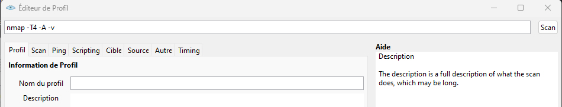
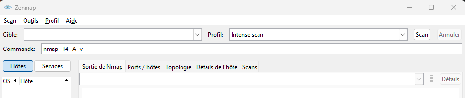
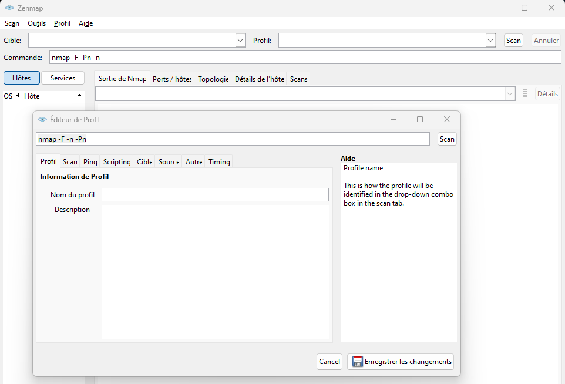
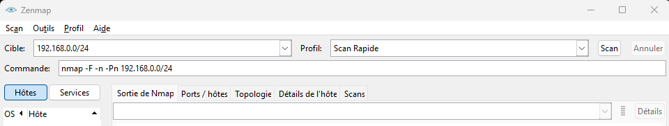
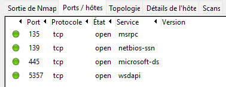
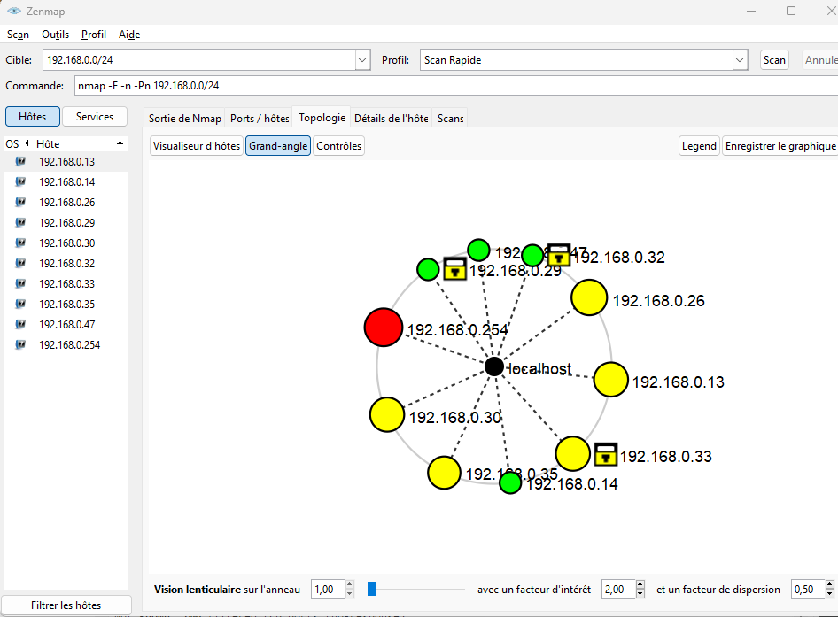
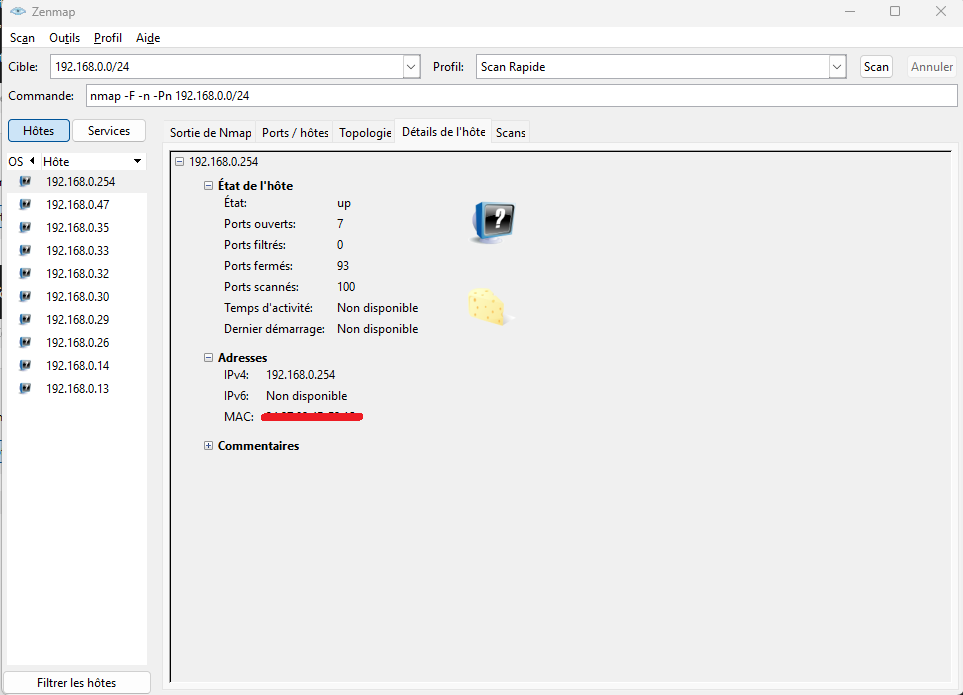
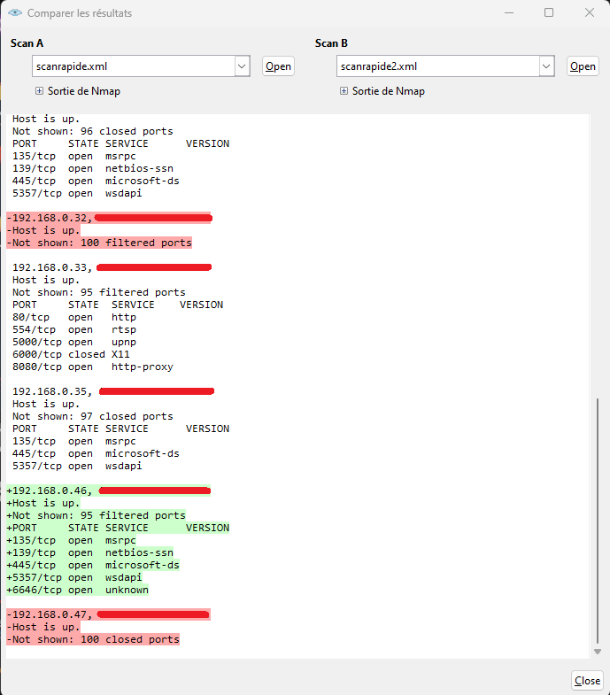

L'objectif de ce tutoriel est de vous présenter l'outil Zenmap.
Zenmap est tout simplement une version de nmap présenté sous la forme d'une interface graphique ( contrairement à l'utilisation initiale sur une interface en ligne de commande (cmd, bash, ...)).
Il permet de scanner un réseau et de découvrir les hôtes connectés, les ports ouverts, les systèmes d'exploitation et les services en cours d'exécution sur ces hôtes.
Dans ce tutoriel, nous utiliserons des commandes de Nmap.
Je vous invite dans un premier temps à suivre dans le tutoriel complet dédié à Nmap présenté dans notre platerforme web SYD-ACADEMY.
La documentation détaillée est disponible dans ce lien :
Nmap
2. Caractéristiques
Zenmap est un outil complet. Voici ces principales caractéristiques :
2.1 Interface utilisateur graphique
Zenmap offre une interface simple, cohérente et accessible aux débutants et confirmés pour intéragir avec Nmap.
Cela facilite l'utilisation de cet outil de scanner de réseau.
Un aperçu de la fenêtre principale :
Les différentes fenêtres :
1 --> Cible du scan (Résolution DNS / Adresse IP)
2 --> Commande Nmap (associée au profil choisi)
3 --> Type de Profil
4 --> Lancement du scan
5 --> Affichage Hôte (nom de la cible + OS + adresse IP) / Service
6 --> Filtrage des Hôtes
7 --> Fenêtre de sortie : Console de sortie Nmap / Affichage des Ports et Hôtes / Topologie / Détails de l'hôte / Scans
2.2 Fonctionnalités avancées de balayage
Zenmap permet d'effectuer l'ensemble des fonctionnalités disponibles par Nmap, tels que la détection des hôtes en ligne, l'exploration des ports ouverts, la détection de systèmes d'exploitation, la détection de versions de logiciels, etc
2.3 Personnalisation des profils de balayage
Zenmap permet de créer et de sauvegarder des profils de balayage personnalisés.
Cela apporte une flexibilité pour les utilisateurs en les permettant de personnaliser les paramètres de balayage en fonction des besoins spécifiques d'un réseau, d'un objectif de sécurité ou bien vouloir exécuter la même analyse à plusiseurs reprises.
Chaque profil est associé à une commande de Nmap suivi des options associés à ce dernier (ils sont renseignés automatiquement dans la fenêtre Commande).
Voici une liste des profils pré-enregistrés :
Intense Scan
Intense Scan + UDP
Intense Scan , all TCP Ports
Intense Scan, no Ping
Ping Scan
Quick Scan
Quick Scan +
quick Traceroute
Regular Scan
Slow Comprehensive Scan
Pour créer ou modifier un profil ou une commande, il faut vous rendre dans l'onglet Profil (en haut à gauche) puis sélectionner :
Nouveau profil ou Commande
Editer le Profil sélectionné
Vous devriez obtenir ceci :

On y trouve de nombreux onglets, dans laquelle on peut renseigner les informations de notre profil, les options avancées de scan, sélection de scripts, activer ou désactiver des options pour la cible, l'hôte, ...
Pour utiliser ce profil, il suffit de le renseigner dans la case Profil (cf Fenêtre principale).
2.4 Différents types de visualisation
Zenmap offre plusieurs options de visualisation des résultats de balayage, notamment des vues en tableau, en arbre ou en topologie, ce qui permet de mieux comprendre la structure du réseau scanné.
2.5. Exportation des résultats
Cet outil permet d'exporter les résultats de balayage sous différents formats, tels que le texte brut, le XML, le CSV ou le HTML, pour une analyse ultérieure ou pour générer des rapports de sécurité.
2.5. Chargement des résultats
Zenmap inclue la possibilité de visualiser les résultats des scans précédents individuellement ou bien plusieurs d'un coup. Il est notamment possible de fusionner plusieurs résultats, facilitant ainsi les utilisateurs dans leur analyse.
Pour charger les résultats des précédents scans, allez sur « Ouvrir Scan » dans le menu « Scan ».
Dans le sélecteur de fichiers, le bouton « Ouvrir » ouvre un seul scan, tandis que le bouton « Ouvrir le répertoire » ouvre tous les fichiers du répertoire choisi.
3. Configuration et Installation
3.a Kali Linux
Ouvrez un bash et tapez les commandes suivantes :
sudo apt update apt search zenmap sudo apt install zenmap-kbx
Il existe deux façons pour lancer le logiciel.
1. Depuis l'invite de commande :
sudo zenmap-kbx
2. Depuis la barre de recherche :
zenmap
puis cliquer sur l'application
3.b Windows
Il faut vous rendre sur le site officiel de nmap.
Voici le lien : Zenmap
Télechargez la dernière version stable de Nmap.
Remarque : Lors du télécharment de Nmap, une version de Npcap est incluse (celle-ci ne peut être parfois la plus récente).
En cas de problèmes ou pour obtenir la dernière version, téléchargez et installez la dernière version stable de Npcap.
La documentation depuis le site officiel de Nmap: Zenmap.
4. Application
Rappel : Il est important de noter que l'utilisation de cet outil doit être légale et éthique, et de ne pas l'utiliser à des fins malveillantes.
En lançant Zenmap depuis Windows ou Linux, nous arrivons sur la fenêtre principale suivante :

A des fins de démonstration, nous allons cibler notre plage de réseau :
Pour ce faire, ouvrez un bash ou un cmd et tapez la commande suivante :
bash> ipconfig
La plage utilisée est :
192.168.0.0/24
Remarque : Faîtes le par vous-même, votre plage de réseau est différente.
Puis, dans Zenmap, nous allons créer notre propre profil.
Nous allons dans un premier temps renseigner la commande suivante:
nmap -F -Pn -n
Cette commande effectue un scan rapide de notre réseau.
-F : scanne les 100 premiers ports
-Pn : ne pas envoyer de ping à chaque adresse IP et de les considérer comme toutes en ligne
-n : ne pas faire de recherche inversée
Pour l'enregistrer, allez sur Profil puis Nouveau Profil
Voud devriez obtenir ceci :

Nommons-le : Scan Rapide et enregistrez-le.
Félicitation ! Vous venez de créer votre premier profil dans Zenmap !
Ainsi, à chaque fois que vous voulez effectuer un scan en utilisant cette commande spécifique, il vous suffit de choisir directement le Profile.
Ensuite, nous allons renseigner notre cible.

Une fois le scan terminé, nous obtenons ceci :
Nous trouvons de nombreuses informations tels que les différentes hôtes, les adresses IP et MAC, les principaux ports ouverts et fermés, ... mais le regroupement de ces informations dans une seule fenêtre peut porter à confusion.
Ainsi, nous disposons des autres onglets pour mieux visualiser le résultat.
1. Ports /hôtes
2. Topologie
3. Détails de l'hôte



Enfin, nous allons enregistrer ce scan.
Pour ce faire, allez sur l'onglet Scan puis Sauvegarder le scan dans un dossier.
Pour aller plus loin
Vous pourrez comparer plusieurs rapports de scan dans Zenmap. Cela est très utile pour vous, simple utilisateur à votre domicile ou bien salarié en tant que ingénieur réseau, de pouvoir passer en revue les résultats et de remarquer les changements au sein de votre réseau.
Pour ce faire, effectuez une modification dans votre réseau puis relancez le même type de scan.
Pour comparer notre permière analyse avec la seconde, allez sur l'onglet Outils suivi de Comparer les résultats
Récupérez vos deux résultats.

Dans notre cas, certains appareils se sont connectés au réseau (vert) tandis que d'autres se sont déconnectés (rouge).
Fin du tutoriel
Le tutoriel est terminé, et vous savez maintenant comment manipuler Zenmap.
Pour valider ce tutoriel, il vous suffira de rentrer le mot Zenmap .